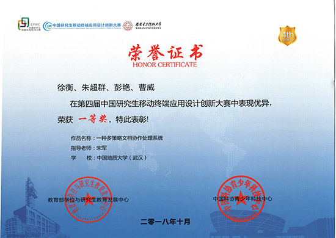
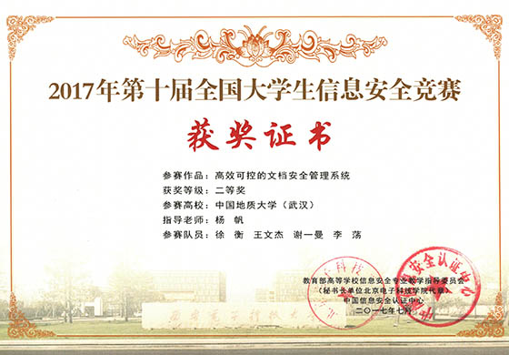
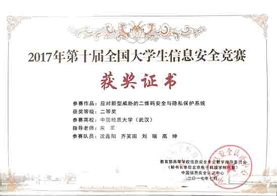
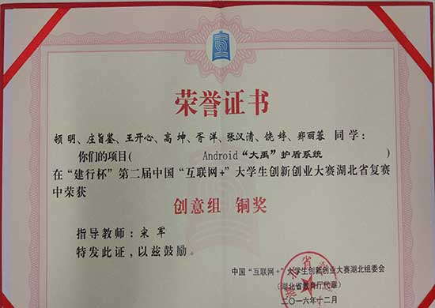
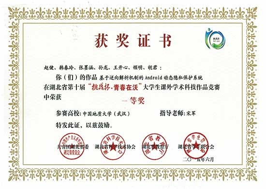
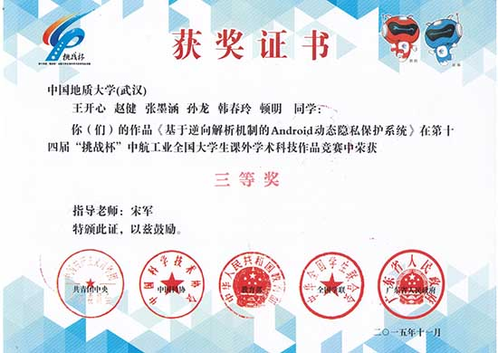
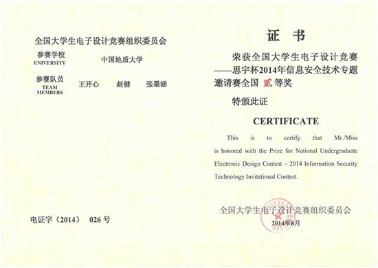
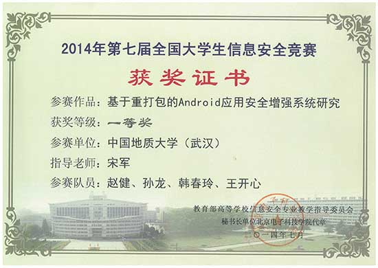

团队荣誉
-

第四届中国研究生
移动终端应用设计创新大赛2018年10月：徐衡、朱超群、彭艳、曹威
指导老师：宋军
-
第十一届全国大学生信息安全竞赛
优秀指导老师获奖老师：宋军
-

第十一届全国大学生信息安全竞赛
2018年7月：牛蕴方、林晚霜、惠峥、胡雨涛
指导老师：宋军
-

中国地质大学（武汉）第二十八届
校级科技论文报告会2018年1月：徐衡、王文杰、谢一曼、李荡
指导老师：杨帆
-

第十届全国大学生信息安全竞赛
2017年7月：徐衡、王文杰、谢一曼、李荡
指导老师：杨帆
-

全国高校互联网应用创新大赛
2017年11月：徐衡、高坤、胡雨涛
指导老师：宋军
-

第三届中国“互联网+”大学生创新创业大赛
湖北省复赛2017年11月：齐笑田、刘瑞、沈鑫阳、林晚霜、胡雨涛、惠峥、牛蕴方
指导老师：宋军
-

第十届全国大学生信息安全竞赛
2017年7月：沈鑫阳、齐笑田、刘瑞、高坤
指导老师：宋军
-

”建行杯“第二届中国”互联网+“
大学生创新创业大赛2016年12月：顿明、庄旨鉴、王开心、高坤等
指导老师：宋军
-

首届”互联网+“大学生创新创业大赛湖北省
2016年3月：王开心、赵健、孙龙、顿明等
指导老师：宋军
-
首届”互联网+“大学生创新创业大赛校赛
2015年9月：王开心、赵健、韩春玲等
指导老师：宋军
-

湖北省第十届”挑战杯*青春在沃“
大学生课外学术科技作品竞赛2015年6月：赵健、韩春玲、张墨涵、孙龙等
指导老师：宋军
-

第十四届”挑战杯“中航工业
全国大学生课外学术科技作品竞赛2015年11月：王开心、赵健、张墨涵、孙龙、韩春玲等
指导老师：宋军
-

第八届全国大学生信息安全竞赛
2015年8月：肖诗尧、田凯、王小双、庞晓健
指导老师：宋军
-

全国大学生电子设计竞赛
2014年8月：王开心、赵健、张墨涵
指导老师：宋军
-

中国地质大学（武汉）第二十五届
校级科技论文报告会2014年11月 优秀指导老师 宋军
-

中国地质大学（武汉）第二十五届
校级科技论文报告会2014年11月：赵健、张墨涵、孙龙、韩春玲
指导老师：宋军
-

第七届全国大学生信息安全竞赛
2014年7月：赵健、孙龙、韩春玲、王开心
指导老师：宋军
-

2012年全国大学生信息安全竞赛
2012年7月：龚铖、樊峰峰、林佳华、崔强
指导老师：宋军
- <01/19>
- <02/19>
- <03/19>
- <04/19>
- <05/19>
- <06/19>
- <07/19>
- <08/19>
- <09/19>
- <10/19>
- <11/19>
- <12/19>
- <13/19>
- <14/19>
- <15/19>
- <16/19>
- <17/19>
- <18/19>
- <19/19>